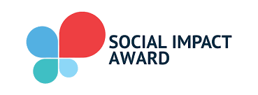
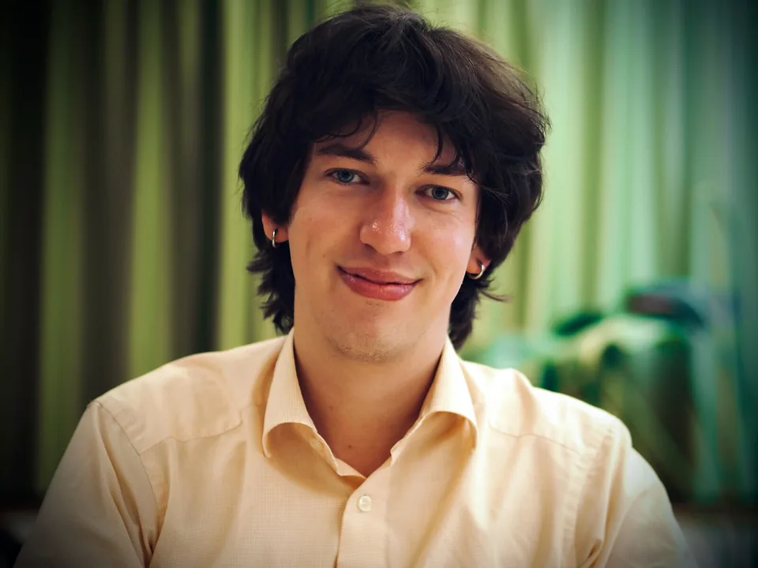
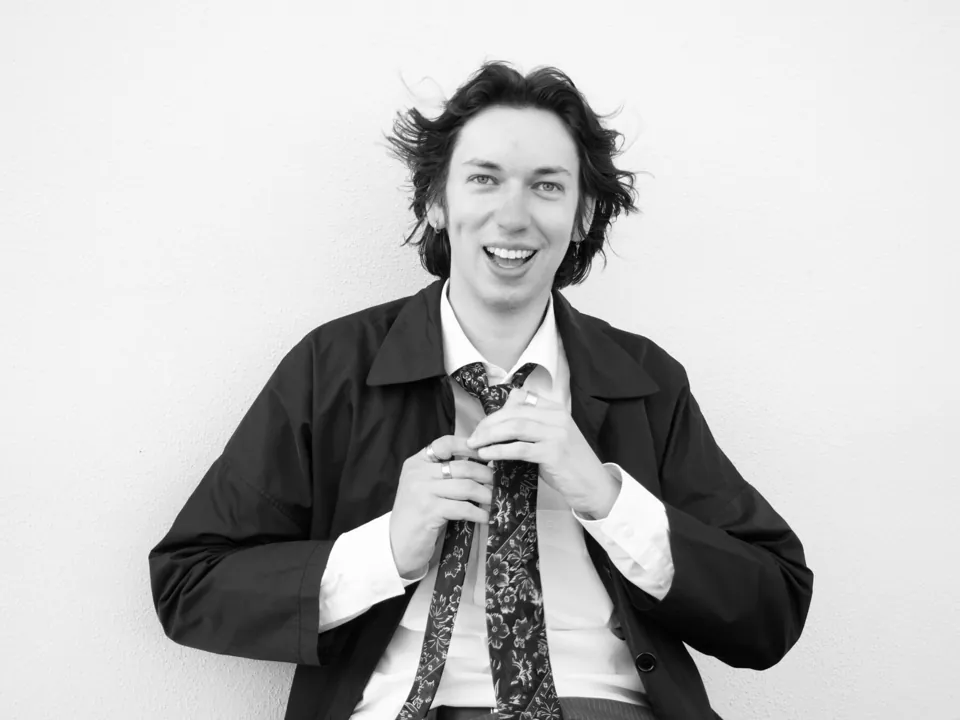
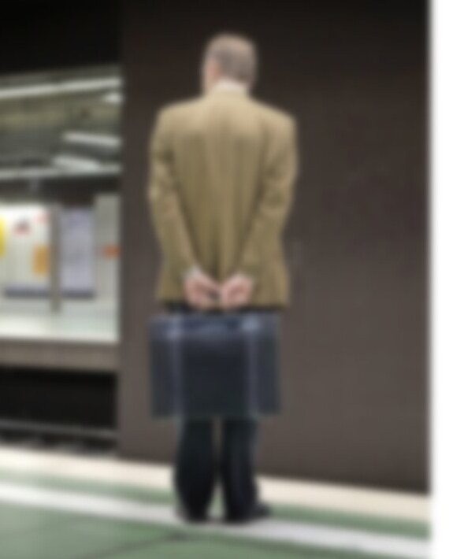

Presse & Medien
Presse
Interviews, Berichte und Podcasts über meine Arbeit zu Generationen, Einsamkeit und dem Übergang in den Ruhestand – dazu Pressefotos, Kurzbiografie und Kontakt für Redaktionen.
- Pressekontakt
- kontakt@simonschaugg.de
- Themen
- Übergang in den Ruhestand · Einsamkeit · Dialog der Generationen · Ankommen in Deutschland
- Formate
- Interview, Vortrag, Podiumsdiskussion
Berichterstattung u. a. in

Nächster Termin · Vortrag & Diskussionsrunde
Landesärztekammer Rheinland-Pfalz · Mainz
„Das Leben nach der Praxis – schon für den Ruhestand vorgesorgt?“
15.30–17.45 Uhr, Haus der rheinland-pfälzischen Ärzteschaft, Mittlere Bleiche 40, Mainz. Diskussionsrunde mit Dr. Alexander Dorn, Bastian Bauernfeind, Thorleif Schaab und Simon Schaugg zur Praxisabgabe und zum Übergang in den Ruhestand.
Für Redaktionen
Pressematerial
Pressefotos in voller Auflösung, Kurzbiografie und Kontakt – zum direkten Verwenden.




Kurzbiografie
Simon Elias Schaugg studiert Psychologie an der Goethe-Universität Frankfurt, ist Gründer von YOLD und Mitgründer von NeuHier.
Simon Elias Schaugg ist Psychologiestudent an der Goethe-Universität Frankfurt, Gründer von YOLD und Mitgründer von NeuHier. Er verbindet psychologisches Wissen mit praktischer Erfahrung im Aufbau von Gemeinschaft – zu Generationenaustausch, Einsamkeit und sozialem Ankommen. Daneben arbeitet er als Zeichner und Jazzpianist. Er lebt in Frankfurt am Main.
Pressekontakt
Simon Elias Schaugg
kontakt@simonschaugg.deFür Presseanfragen, Interviewwünsche und Vortragsbuchungen.
- Ruhestand & Identität
- Einsamkeit
- Generationendialog
- Soziales Ankommen
„Den Leistungsdruck nicht mit in den Ruhestand nehmen.“
Aufmacher der Titelseite von Rhein-Main & Hessen in der Frankfurter Allgemeinen Sonntagszeitung: ein Interview darüber, was psychologisch geschieht, wenn nach Jahrzehnten im Beruf die Rolle wegfällt, die das Selbstbild getragen hat. Die Fragen stellte Anaïs Muschter.
Online auf faz.net unter dem Titel „Die Gefahr ist, dass mit dem Übergang in den Ruhestand ein Identitätsbruch stattfindet.“
Interview auf faz.net lesen
Chronologisch · neueste zuerst
Pressespiegel
- Journal Frankfurt„Drei Frankfurter greifen nach ‚Movers of Tomorrow Award‘“Bericht von Yasemin Kamisli über drei Frankfurter Finalisten des „Movers of Tomorrow Award“ – darunter Simon Schaugg und YOLD.
- Social Impact Award Germany„YOLD: Finalist Spotlight“Interview mit dem YOLD-Team über Idee, Aufbau und Vision eines generationsübergreifenden Netzwerks.
- Stiftung Polytechnische Gesellschaft„100 Projekte für mehr Zusammenhalt“Kurzporträt von YOLD im Magazin der Stiftung.
- EinBlick · Goethe-Universität„Neu hier: endlich dazugehören“Beitrag über NeuHier im Newsroom der Goethe-Universität Frankfurt, EinBlick Ausgabe 63.
- Frankfurter Neue Presse„YOLD sucht junge Tandems“Zwei Drittel der rund 100 Registrierten sind über 55 – das Projekt sucht nun gezielt junge Tandempartner.
- Radio Frankfurt„YOLD Frankfurt: Wenn Alt und Jung sich suchen, aber die Jungen fehlen“Radiobeitrag über das YOLD-Tandemprogramm.
- news.de„Ehrenamt in Frankfurt am Main“Überblick zu Freiwilligenarbeit und Engagement, erwähnt YOLD.
- UniReport · Goethe-Universität„Erfahrungsaustausch über Generationengrenzen hinweg“Goethe-Universität Frankfurt, UniReport Ausgabe 2/2026.
- UniReport · Goethe-Universität„Sharing Experiences Across Generations“Englischsprachiges Feature im Newsroom der Universität.
- openPR · idw„Eine kollaborative Werkstatt und eine Generationenbrücke gegen Einsamkeit“Wissenschafts-Pressemeldung (Informationsdienst Wissenschaft).
- aktuell24.ch„Eine kollaborative Werkstatt und eine Generationenbrücke gegen Einsamkeit“Übernahme der Pressemitteilung.
- Vorsprung FrankfurtGenerationenbrücke gegen EinsamkeitÜbernahme der Meldung auf frankfurter.online.
- Social Impact Award Germany„15 vielversprechende Antworten auf die drängendsten Fragen unserer Zeit“YOLD offiziell als einer von 15 Finalisten 2026 verkündet – mit Kurzporträt und Zitat.
- Her Way – Women Living Abroad„Building a Startup as an Outsider in Germany: Legitimacy Before Results“Ziyue Zhang zu Gast über NeuHier und das Gründen als Außenstehende.
- F.A.Z.„Beim ersten Treffen waren sie zusammen joggen.“Halbseitiges Feature von Vanessa Fatho über das YOLD-Tandem von Steffen Luhn (28) und Lydia Fratzer (66). Hochschule, S. 6.
- Journal Frankfurt„Tandem-Projekt bringt Studierende und Senioren zusammen“Interview mit Simon Schaugg über Einsamkeit in Frankfurt.
- Stadt Frankfurt im Blick„Generationen verbinden, Erfahrungen teilen“Magazin-Beitrag über das intergenerationelle Programm.
- Best Practice Startup Club„Migration nach Deutschland (neuhier.com) mit Robin Schaugg“Von der Idee bis zur Umsetzung von NeuHier.
- Frankfurt-Live„Frankfurt Next Generation lädt ein“Bericht, der die YOLD-Skillbörse erwähnt.
Zitate
O-Töne aus der Berichterstattung
Direkte Zitate von Simon Schaugg aus Artikeln und Interviews – sofern nicht anders vermerkt.
„Die Gefahr ist, dass mit dem Übergang in den Ruhestand ein großer Identitäts- und Rollenbruch stattfindet, auch sozial. In der Sozialpsychologie gibt es den Social Identity Approach. Das heißt, dass wir uns als Personen nicht nur über individuelle Eigenschaften definieren, sondern auch über unsere Zugehörigkeit zu verschiedenen sozialen Gruppen und Rollen.“
„Gerade war man noch Chef, und jetzt ist diese Rolle von einem Tag auf den anderen nicht mehr da.“
„Deshalb finde ich die Vorstellung problematisch, mit dem Ende des Arbeitslebens beginne automatisch die letzte, passive Lebensphase. Für viele Menschen fängt vielmehr ein neuer Lebensabschnitt an.“
„Man muss aber keinen ‚perfekten Ruhestand‘ führen. Gerade weil das Altern selbst so eine Herausforderung ist, sollte man versuchen, nicht alles völlig ernst zu nehmen, sondern auch mit Humor und Leichtigkeit heranzugehen.“
„Einsamkeit hat Auswirkungen auf die Gesundheit, die vergleichbar mit Rauchen sind und mit körperlichen und psychischen Erkrankungen einhergehen können.“
„Wir sind bewusst kein klassisches Mentoring, das die Karriere ankurbeln soll. Bei uns geht es um die Begegnung an sich, unabhängig davon, was wer geleistet hat.“
„Rentner sind Menschen, die wahnsinnig viel erlebt haben und viel Erfahrung mitbringen, aber gesellschaftlich oft eher als Belastung wahrgenommen werden.“
„Abgesehen vom familiären Umfeld gibt es zwischen der jüngeren und der älteren Generation nur wenig Austausch. Man spricht eher übereinander als miteinander. Die Generation Z sagt, die Babyboomer hätten die Umwelt belastet, die Älteren wiederum sagen, wir seien nicht fleißig genug.“
„Das ist total toll für mich. Wir treffen uns zum Beispiel entspannt auf einen Wein und schlagen einander Literatur vor.“
„Das sind Gruppen, die sich im Alltag heutzutage wenig begegnen.“
„Hier ist der Blick aus beiden Perspektiven wertvoll: derjenigen, die alle Entscheidungen noch vor sich haben, und denen, die eher auf ein Leben und Erfahrungen zurückblicken. Wir wollen eine Plattform werden, die diesen Fragen Raum gibt und den Wert dieser Erfahrungen anerkennt.“
„YOLD is all about the richness of human experience.“
„Every experience and perspective within a tandem is equally valuable; both people should benefit from the exchange.“
„Was passiert, wenn junge und ältere Generationen füreinander da sind, statt aneinander vorbeizuleben? YOLD verbindet erfahrene Ältere mit bildungsbenachteiligten Jugendlichen und jungen Erwachsenen. Wissen wird geteilt, Einsamkeit bekämpft – ein Ansatz, zwei Krisen.“
Weitere Erwähnungen
Film & Verzeichnisse
Rollen und Stimme in Filmen von Peter Bösselmann, Heidelberg, samt Presse dazu – und Einträge von YOLD in Netzwerken.
Filmische Mitwirkungen
- „Von Tag zu Tag“Mini-Musical · Video-SingspielMitwirkung: Gesang. Produziert vom Kulturamt Heidelberg, gefördert von Stadt Heidelberg & LBBW-Stiftung.
- Mannheimer Morgen„Spielfiguren demonstrieren in Heidelberg für Klimaschutz“Porträt von Peter Bösselmann und „Von Tag zu Tag“ (MM+, Teaser).
- Mannheimer Morgen„Inselbewohnern droht der Untergang“Fotostrecke zu „Von Tag zu Tag“.
- fnweb.de„Klimaschutz mal anders“Syndizierung derselben Berichterstattung zu „Von Tag zu Tag“.
- „36 Ansichten des Kôsô Entotsu“KurzspielfilmRolle laut Abspann: „Anrufer Forum“.
- MRN-News„Heidelberg und Prag stellen gemeinsamen Kurzfilm zum Kafka-Jahr vor“Zum Film „In die Ferne grüßen“ – Rolle laut Abspann: „Die Zuhörenden / Posluchači“.
- Stadt Heidelberg„10 Jahre UNESCO City of Literature“Erwähnt „In die Ferne grüßen“ im Kafka-Kontext.
- Atelier KlausenpfadKünstlerseite Peter BösselmannÜbersicht aller drei Filme.
YOLD in Verzeichnissen
- Frankfurter Plattform 55+YOLD-ProfilGelistet über die VHS Frankfurt / Dezernat für Bildung.
- Freizeit-Helden„YOLD – Generationspate finden“Projekteintrag zu YOLD Community & YOLD Connect, mit Mitmach-Aufruf.
- Ehrenamtssuche HessenYOLD gelistetEintrag über das Bürgerinstitut e.V.
Weitere Erwähnung (keine Presse im engeren Sinn): interner Teilnahmeaufruf der Fachschaft Physik / Biophysik der Goethe-Universität.